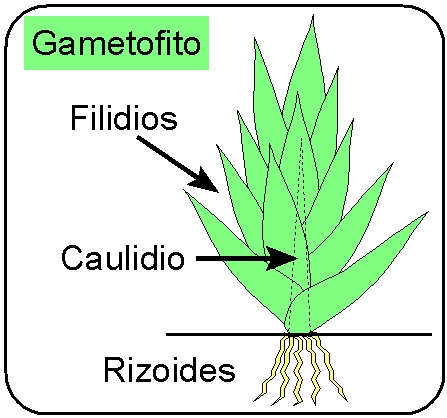
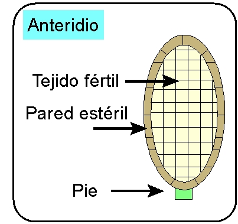
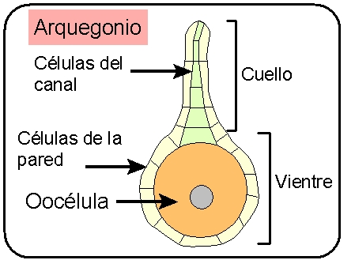
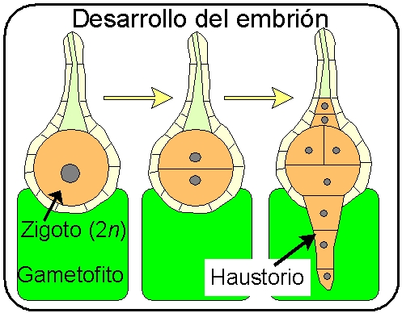
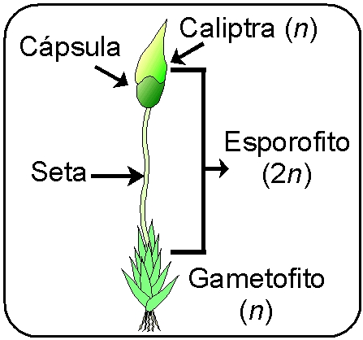
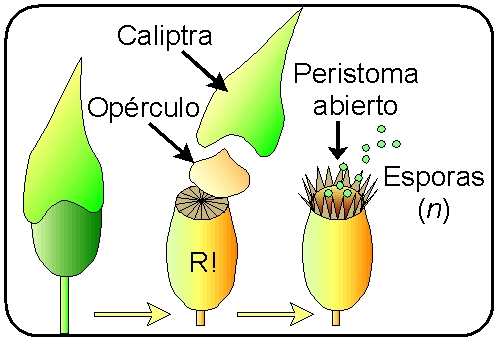
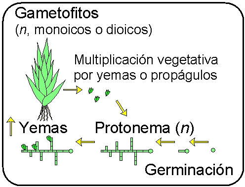

| 1) La fase vegetativa es el llamado gametofito (porque
produce los gametos), que es haploide, fotosintético y
de vida independiente. |
- Produce 2 tipos de gametangios, que
suelen reunirse en pequeñas cabezuelas en el extremo
de gametofito o en cortas ramitas laterales.
- Hay especies monoicas que tienen ambos tipos de
gametangios (masculinos y femeninos)
- Otras son dioicas,
con dos tipos de gametofitos: masculinos y femeninos
|
|
 |
2) Formación de los gametangios en el
extremo del caulidio o encortas ramitas laterales:
- 2a) Anteridios
(masculinos), que producen anterozoides móviles
biflagelados de estructura similar a los de las
Carofíceas
|
|
 |
- 2b) Arquegonios
(femeninos), en forma de botella, con una sola
oocélula protegida por una pared de células
estériles. Las células que tapan el canal del cuello
se lisan al madurar el arquegonio y la sustancia
que producen atrae a los anterozoides
|
|
 |
3) La fecundación se produce en medio
acuático gracias a:
- las salpicaduras de la lluvia, al agua del
rocío, o al agua rezumante que fluye por encima de
las colonias, lo que permite el paso de los anterozoides a
los arquegonios entre
ramas fértiles o plantas diferentes.
|
- No obstante, se ha demostrado recientemente
que pequeños colémbolos (insectos ápteros) pueden
actuar como vectores de fertilización (Cronbergl
& al., 2006)
|
 |
4) El zigoto resultante se desarrolla
in situ inmediatamente, produciendo un embrión
gonotrófico
que se nutre del gametofito gracias a las células
inferiores que forman una especie de pie absorbente o
haustorio que penetra en el tejido materno. En cada
grupo de briofitas el desarrollo del embrión sigue
unas pautas determinadas.
|
|
 |
5) El crecimiento del embrión puede ser
muy corto o algo prolongado, según los grupos,
resultando un esporofito
(2n) que
se compone de una sola cápsula
acompañada o no por un pie o seta
estéril que sirve para elevar la cápsula y
mejorar la dispersión de las esporas
|
|
 |
6) El tejido fértil del
interior de la cápsula (tejido esporógeno) produce por
meiosis las esporas haploides que se dispersan en el
aire cuando están maduras
|
|
 |
7) Las esporas germinan en condiciones
adecuadas y producen un protonema
filamentoso, que es la fase juvenil del
gametofito
- El protonema se reproduce por crecimiento y
fragmentación, constituyendo la fase de
multiplicación vegetativa
- Cuando las condiciones de iluminación y
humedad son las adecuadas, se originan varias yemas, cada una
de las cuales da lugar a un nuevo gametofito
|
|
 |
8) Multiplicación vegetativa de los
gametofitos, gracias a la producción de yemas
especiales o propágulos, que pueden originar nuevos
protonemas o gametofitos
|
| Las
figuras esquemáticas de este cuadro son originales del autor
de esta página |